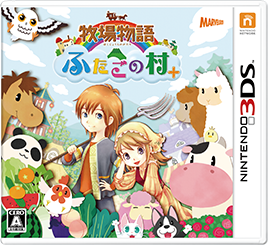

牧场物语 双子之村＋
发售日期：2017/12/14
对应机器：任天堂 3DS
「牧牧场物语 双子之村」重新登场。
在新的游戏开始时，可以选择角色类型等，变得更容易玩了。
在充满动物的“蓝铃村”和庄稼丰收的“此花村”，两个村庄之间来回行动。
居民们的活动也很丰富。通过通讯交换可以去朋友牧场玩，或者通过擦肩通信来交换物品。
©2017 Marvelous Inc. All Rights Reserved.